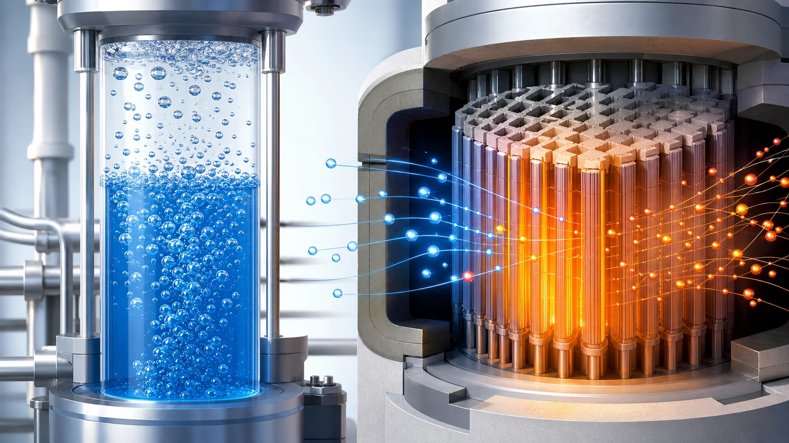
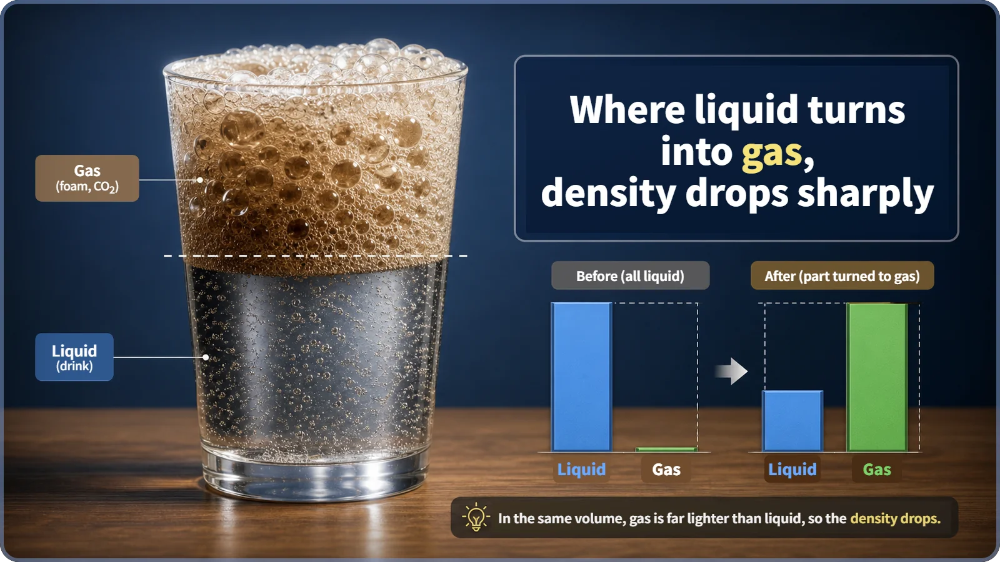
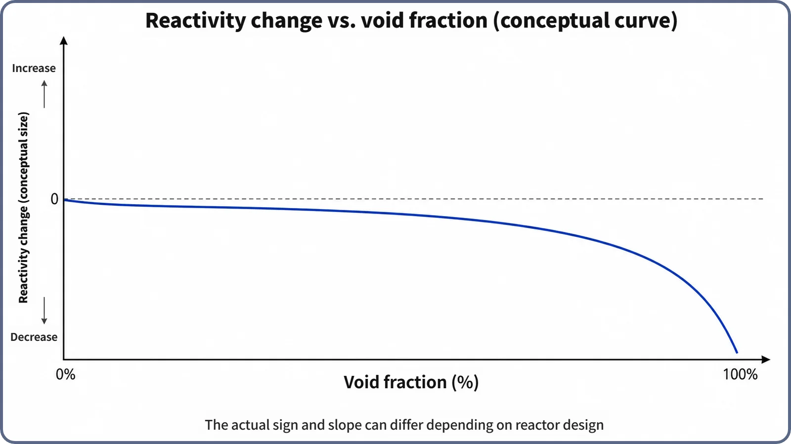

Reactor Kinetics & Reactivity · 120
Why a Shaken Soda Foams Up the Moment You Open It — How Coolant Density Changes Shake Reactivity
Steam voids in the coolant cut its density far more than gentle warming does, changing how well neutrons are slowed down.

When reactor coolant boils locally, steam bubbles (voids) replace liquid water and the density at that spot drops sharply, far more than gradual thermal expansion ever does. In water-moderated reactors, lower density means weaker neutron moderation, a shifted neutron spectrum and a change in reactivity. Today's commercial designs generally aim for more voids to mean lower reactivity, a self-restraining negative feedback.
When liquid turns to foam
Ever opened a soda bottle that had been rolling around? With a "pssst," what looked like plain liquid fills with fizzing bubbles in an instant. The amount of stuff in the bottle hasn't changed, yet the moment a spot switches from liquid to gas, its effective density (how tightly packed it is) changes completely. Turn a layer of liquid into foam and that spot gets much "lighter."
Reactor coolant goes through the same thing. If the water cooling the reactor boils locally and forms steam bubbles, a spot that was liquid a moment ago becomes gas and its density drops sharply. That is not just "a little less water." It changes how neutrons are handled in the core, and so it has a considerable effect on reactivity (how far the reactor is from its critical balance).
The soda glass is the coolant channel; the bubbles are voids
The glass is a channel through which coolant flows. The bubbles are what nuclear engineers call a void: the vapor (gas) part of the coolant. The share of the total volume taken up by that vapor is the void fraction.
In reactors cooled by light (ordinary) water, the same water often does two jobs: it is the coolant that carries heat away, and the moderator that slows fast neutrons from fission by making them collide with water molecules (more precisely, hydrogen nuclei). So when the water's state changes, cooling and moderation are affected together. And moderating ability depends far more on density, how tightly molecules are packed in a given volume, than on the material being water. Tightly packed molecules mean frequent collisions and good slowing over a short distance; sparse molecules mean fewer collisions and poorer moderation.

Why boiling makes such a violent change
Recall the moderator temperature coefficient: as the moderator (usually the same water as the coolant) slowly warms, it expands and its density falls bit by bit. The water stays liquid while "sensible heat" (heat you feel as a temperature rise) pushes its temperature up, so the change is gentle and continuous.
Boiling is different. Once water reaches its boiling point (strictly, the saturation temperature at that pressure), extra heat no longer raises the temperature; it all goes into turning liquid into gas, as "latent heat." The temperature barely moves while the substance changes state. And at the same pressure and temperature, liquid and gas hold completely different numbers of molecules per volume. The exact ratio depends on pressure, but across the typical operating pressure range of nuclear plants, liquid is roughly several times to more than ten times denser than vapor. (The higher the pressure, the smaller the gap; no specific plant pressure is assumed here.)
So even when only a small part of the coolant boils, the average density at that spot drops far more than thermal expansion ever managed. That is the key contrast: the moderator temperature effect is slow and continuous; boiling (void formation) is a change of state, a much more violent, locally abrupt density change. One more difference: thermal expansion happens whenever the coolant warms at all, while voids appear only where the coolant locally reaches saturation conditions.
A simple expression shows why:
Average density = (1 − void fraction) × liquid density + void fraction × vapor density
The channel's average is the liquid's share and the vapor's share, each weighted by its own density. Because vapor is so much lighter, even a small rise in void fraction pulls the average well away from the liquid value. Treat it as an intuitive picture rather than a calculation tool.
From density change to reactivity
When coolant (moderator) density falls, there are fewer water molecules per unit volume, so neutrons collide less often. They need a longer distance (or time) to slow to thermal energy (the low energy at which they readily cause fission), and the core's neutron energy spectrum shifts. The changed spectrum and degree of moderation alter the balance of neutrons produced, absorbed and leaked across the core, and the whole reactor's reactivity moves.
The exact direction (positive or negative) and size depend on how well moderated the core is (design features such as the moderator-to-fuel ratio), and why this differs by reactor type, along with the formal coefficient that quantifies it, is a topic for another time. Today's scope is why, and by what path, reactivity changes when voids form. Still, today's commercial reactor designs generally adopt as a basic safety principle that reactivity should fall as coolant voids increase, so the reactor holds back its own power (negative feedback), though this is not claimed to hold for every reactor type without exception.

Telling the neighbors apart
Void and void fraction vs. just "bubbles." Everyday speech says "bubbles"; nuclear engineering treats the vapor's share of a channel's volume as a quantity, the void fraction (%). "Void" is the vapor itself.
Coolant density change vs. the moderator temperature coefficient. Both involve falling water density affecting reactivity, but one comes from a change of state (boiling), the other from thermal expansion within the liquid. In a real reactor both act together, at different sizes and speeds.
Density change from voids vs. boiling crisis (critical heat flux). Both involve boiling, but this post is about how boiling-driven density change affects neutron physics. The heat-transfer limit where boiling goes so far that the coolant can no longer properly cool the fuel surface is an entirely different topic.
Why it matters for safety, operation and design
How coolant density (void) changes affect reactivity is a key element in judging a reactor's built-in ability to restabilize itself, and designing for the desired direction, holding power back when it tries to rise too far, is one of the basic principles of reactor safety design. In fast power transients, rising coolant temperature and local boiling can occur together, so this relationship is quickly reflected in actual power behavior (specific time scales vary by reactor type and event). Core designers must include the size and direction of density-driven reactivity feedback in reactor physics calculations; it is a basic input to thermal-hydraulic design, safety analysis and licensing review.
Two common misconceptions
"Bubbles are just empty holes, so the coolant volume only shrinks a little." No. Vapor is not empty space but a separate state of matter with much lower density, and the moderating ability at that spot changes greatly.
"Void effects on reactivity are about as large as moderator temperature effects." No. The density change from boiling is much larger than that from thermal expansion over the same temperature range, so its effect on reactivity can appear far more abruptly.
The short version
- When coolant boils locally and forms steam bubbles (voids), the effective density there drops sharply, because liquid has turned into gas: a far more violent change than gradual thermal expansion.
- Average density = (1 − void fraction) × liquid density + void fraction × vapor density; because vapor is so much lighter, a small change in void fraction means a big change in density.
- That density change alters neutron moderation and the spectrum and moves the whole reactor's reactivity. Commercial reactors are generally designed so that more voids mean lower reactivity (negative feedback); why direction and size differ by reactor type is another topic.